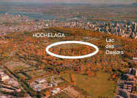
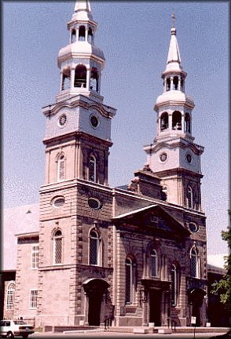
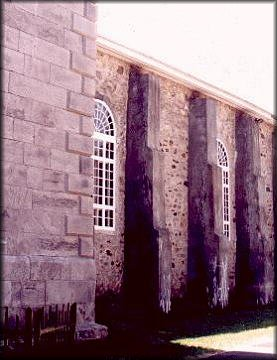
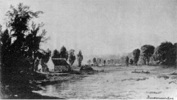
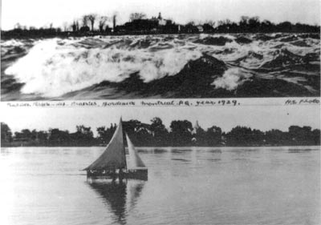

The
Charettes of our line, from the
third to the fifth generation, live in the Sault-au-Récollet. But
where exactly is that?
HISTORY OF THE SAULT-AU-RÉCOLLET
WITNESS TO THE FIRST MOMENTS OF
NEW FRANCE
First, a definition: in our ancestors' language, a sault means a rapid in
a river. So there are Sault-Saint-Louis, Sault-Sainte-Marie,
Long-Sault, Grand-Sault and hundreds of others... and even the Saulteaux, an Indigenous nation
living in the Pays d'en Haut (the upper country).
 When you sail up the St. Lawrence along the
north shore, the Rivière des Prairies seems to be the
continuation of the river. In 1535 it was at the foot of the Gros-Sault that
Jacques Cartier had to stop his boats. Researchers are
convinced of it because of various factors, notably the distance
he says he walked across the island to reach the village
of Hochelaga and his description of the trees along the
paths. Cartier found a very well-organized Iroquoian
nation, surrounded by large cultivated fields and living in
a village as well laid out as a European town.
The original bibliographic documents tell
researchers that the village of Hochelaga that Jacques Cartier visited in
1535 lay in the hollow of Mount Royal, near
Beaver Lake. Indeed, Hochelaga, an Indigenous word,
means "beaver lake". Today only Mount Royal
Park carries on its past.
 In
1615 it is Champlain
who is at the Sault-au-Récollet. By his own account, the Rivière
des Prairies took its name from one of his companions, a man
from Saint-Malo, who ventured into it by mistake. In
1615 it is Champlain
who is at the Sault-au-Récollet. By his own account, the Rivière
des Prairies took its name from one of his companions, a man
from Saint-Malo, who ventured into it by mistake.
The
first Mass on the island of Mount Royal
The first Mass celebrated on
the island of Montréal took place on June 24, 1615, on the bank of the Rivière des Prairies, said by Father Denis Jamet assisted by Father Joseph Le Caron.
From
1535 until Ville-Marie was founded in 1642, the Sault-au-Récollet
witnessed the events that marked the beginning of the history of
the island of Mount Royal, an island that eventually took the name of Montréal. The
island's development shifted from the Rivière des Prairies to
the St. Lawrence River with the arrival of Maisonneuve.


ORIGIN OF THE NAME
In 1625, Father Nicolas
Viel, a Recollet, and a young Frenchman
whom the Hurons nicknamed Auhaitsic (Ahuntsic) died tragically at
a rapid on the Rivière des Prairies in circumstances
that will probably never be cleared up. Ever since, the
spot has been known as the Sault-au-Récollet.
At the end of the 17th century, the Sulpicians had
Fort Lorette built and settled nearby Indigenous people who had converted
to Catholicism or were about to. Until then these had lived in
the shadow of the mountain fort, near Ville-Marie. In 1721 the
Sulpicians would move the mission to Oka.
Also at the end of the 17th century, the seigneurs of the island of
Montréal began granting land to settlers of French origin
along the Rivière des Prairies, on the future Côte du Sault
(today Boulevard Gouin) and, farther south, on the Côte Saint-Michel
(along the line of today's Rue Jarry).
Around 1724-1726, Simon Sicard, hired by the Sulpicians,
built a dam between the Île de la Visitation and the island of Montréal,
along with a sawmill there. Between 1726 and 1753 two
flour mills would also be built there.
In 1736 the Sulpician Jean-Baptiste de Guay-Desenclaves, who
served in the chapel of Fort Lorette, began keeping
the registers of the parish of the Sault-au-Récollet.
From 1749 to 1751 the church of the
Visitation-du-Sault-au-Récollet, the oldest church still
standing on the island of Montréal, was built.


In 1845 the municipality of the parish of
Sault-au-Récollet was founded. From the end of the 19th century, however, it shrank
as several other municipalities were formed out of its territory
(Saint-Léonard, Villeray, Ahuntsic, Bordeaux and
Saint-Michel). What was left became the municipality of
Montréal-Nord in 1915.
|
Today the river's rapids
are only a memory.
They disappeared when
the hydroelectric dam between the island of Montréal and Île Jésus was built
at the end of the 1920s, raising the water level
by six metres. The place no longer has its old charm,
or does it...

Since the Montréal Urban Community,
together with the Ministry of Culture, invested
millions of dollars to
revitalize the Île de la Visitation alongside the neighbourhood and
restore its buildings, the place is well worth getting lost in.
SOME OLD PICTURES OF THE RAPIDS

This old drawing signed Duncanson Pinx shows
the Gros-Sault mill and its tailrace, as a
raft braves the turbulent waters.

These two photos were taken at the same
spot, in Bordeaux, the top one in 1929 and the other in 1931.
Submerged by the rise in water level caused by the
building of the Sault-au-Récollet power station, the raging waters
of the Gros-Sault turned into a calm surface. (photos
H. Sutcliffe, Laval-des-Rapides).

Even opposite Abord-à-Plouffe (today
Chomedey), the Rivière
des Prairies was turbulent, as this photo by
Notman (McCord Museum) shows.
|
Back to top
|